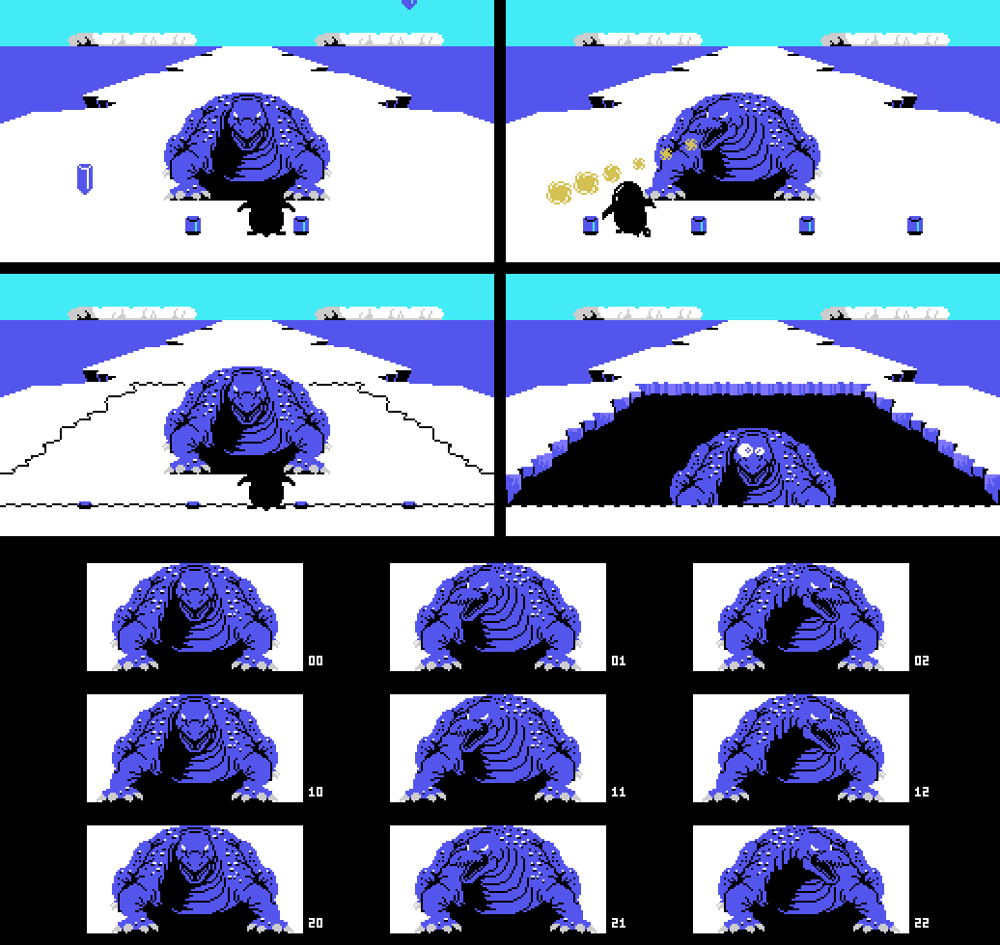
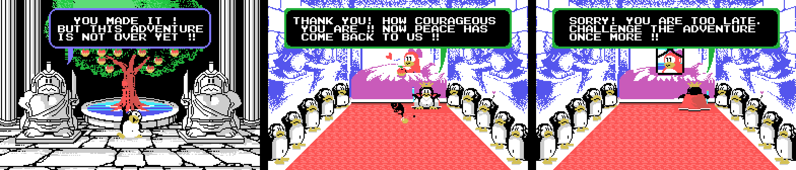
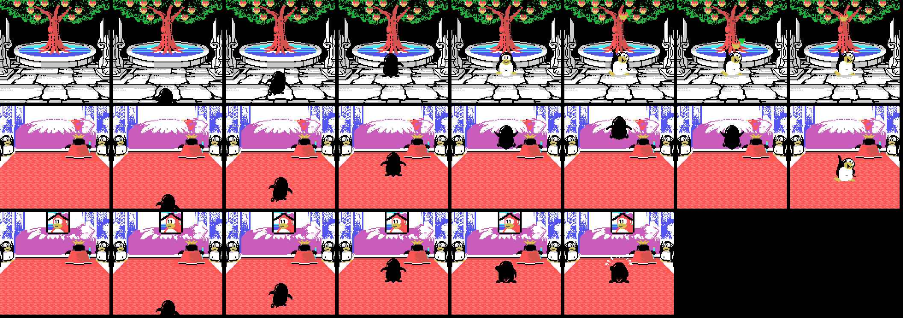
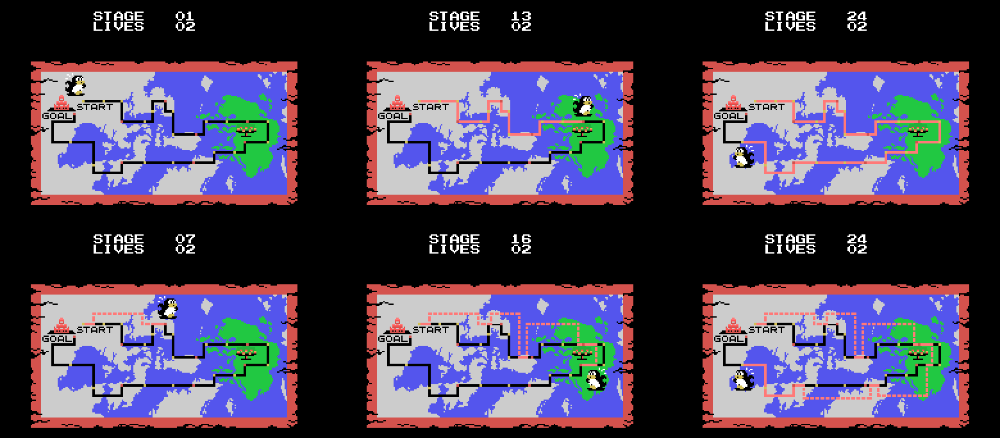
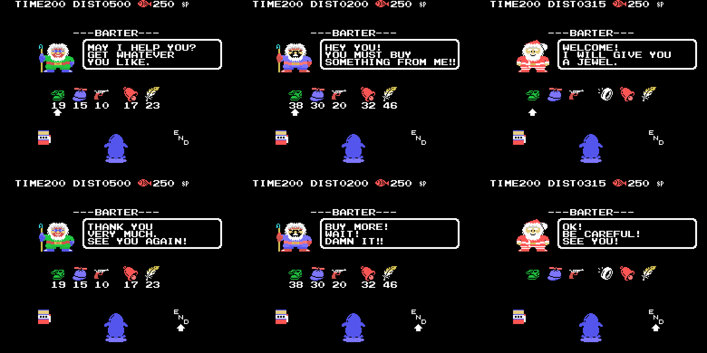
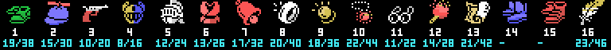

El juego
Penguin Adventure (夢大陸アドベンチャー, Yume Tairiku Adventure) es la continuación de Antarctic Adventure, y de un cartucho de 32 KB pasa a 128. El pingüino corre hacia el fondo de la pantalla, esquiva lo que le sale al paso y tiene que llegar a la meta antes de que se le acabe el tiempo.

Hay dos pantallas de título y el cartucho elige con el byte de país de la BIOS (0x002B). La diferencia es un guion de más, el 0xA463, y sólo toca el rótulo: el dibujo de fondo es el mismo.
Veinticuatro fases, no trece
El cartucho le declara trece al Konami Game Master en su segunda cabecera, la de 0x4010. El juego dice otra cosa: p02:8328 compara la fase con 0x19, y las tablas de cada fase cierran en veinticuatro entradas justas.
Cada fase se anda: 0xE08D es lo que queda y baja uno, en BCD, con cada paso. Y a cada paso le toca algo de cuatro guiones:
| guion | dónde | qué |
|---|---|---|
| el terreno | banco 10, 0x8000 (LEVEL 1) y 0x80F9 (LEVEL 2) | un byte cada 100 pasos; cada byte son ocho cosas de 0x84EA, que salen de una en una cada 6 pasos |
| las curvas | banco 13, 0xADE8 | distancia y hacia dónde tira la carretera (0xE0A6) |
| los bichos | banco 9, 0xA8FB | clase y cuánto hay que andar hasta el siguiente |
| los avisos | banco 13, 0xB046 | la distancia a la que la siguiente cosa sale como grieta especial |
Cada cosa del terreno es un dibujo de caracteres en dieciséis tamaños (0x8682, banco 10): en cada paso p01:68CA borra el anterior con unos y pinta el siguiente, y al decimosexto la ranura queda libre. Con eso la carretera se puede andar entera desde las tablas:

Ocho vistas por fase, de la salida a la meta, y debajo de cada una los bichos que salen en ese tramo. Lo que no sale, dicho: lo que pasa por los lados de la carretera (p01:6AA8 va por cuadros con la barra de velocidad clavada, no por distancia), los bichos en movimiento (su recorrido lo sortea el registro R) y la otra variante de las cosas que apuntan al jugador: aquí va por el centro.
Todo está cotejado con openMSX (tools/coteja.py): las 5.414 cosas que salieron en las partidas de prueba, a la misma distancia y del mismo tipo, y el espejo de pantalla de 424 volcados, casilla a casilla, con cero diferencias.
El menú del título deja elegir entre LEVEL 1 y LEVEL 2, y esa elección no cambia lo difícil que es un tramo: cambia el guion del terreno entero. p01:675B escoge tabla con 0xE08F, la copia que p02:813B hace de 0xE082 al empezar la partida. Los bichos, las curvas y los avisos son los mismos.

Las fases 12, 18 y 24 tienen trampa: a 0x50 de la meta, p01:6476 carga un registro de once bytes (0x64C6, 0x64D1 o 0x64DC) que devuelve atrás lo que queda de fase y los guiones de bichos, curvas y terreno. Sin el objeto de 0xE16C, esas tres fases no se acaban nunca.
Los decorados
Ocho decorados para las veinticuatro fases, y uno más: el espacio. p02:816D los monta por piezas: los tres tercios de caracteres, las diez piezas de p02:966B —cada una con su condición sobre el decorado y una tabla de color de 24 bytes que p00:440D aplica al pintar—, el mapa de 672 bytes que p01:6000 descomprime en 0xEBE0 y el primer paso de la animación del suelo.

El hielo, el bosque nevado, el desierto, el bosque, el mar en la superficie, el cañón con el río, la cueva, el fondo del mar y el espacio. Montados así dan cero bytes distintos contra el primer cuadro de cada fase en openMSX.
El pingüino
Negro y de espaldas: las poses de la tabla de 0xA91D llevan el color 1. Corre con las poses 0-1-0-2 (p02:978E, una cada ocho cuadros), y los patrones cambian con el terreno: p00:57FB lo carga de una de tres tiras —0x8600 en tierra, 0x78F1 en el hielo, 0x79C7 en el mar y en el espacio— con el otro pintor del cartucho, pinta_bloque (p00:43B3), que sube columnas de dieciséis bytes y, si se le pide, la misma columna espejada.

Nadando en la superficie no hay pose de la tabla: p02:9A1D pone la 10 y cambia los dos sprites de abajo por espuma cada dieciséis cuadros. Bajo el mar las poses 7, 8 y 9 van en T (p02:9C3A), y en el espacio esa misma figura lleva los colores que le pisa p03:A778.
Los bichos
Los tres huecos de objeto de 0xE310 admiten quince clases (p09:A8D1), y las que se ven escogen su dibujo por la distancia: cuatro bandas y, si aletean, dos dibujos por banda que se turnan con el bit 2 del contador de cuadros (p09:AA86). Qué es cada dibujo depende de lo que cargue la fase —p02:9689 carga los suyos—, así que la misma clase puede ser un bicho en unas fases y otro en otras.

La clase 7 no se ve. p09:B8B3 le pone el color 0 —transparente— salvo que se lleve 0xE16A, y entonces el 5.
El dinosaurio y la meta
Las últimas 0x30 de cada fase son nueve cortes (p01:65CF). En cuatro se cargan caracteres y en los otros cinco se copia sobre el mapa una tira más grande que la anterior: lo que se acerca. En las fases cuyo 1-2-3 vale 3 —la 3, la 6, la 9... hasta la 24— lo que se acerca es un dinosaurio, y detrás viene la pelea, el estado 7 (más abajo).

En las demás, la meta: dos pingüinos que celebran.

La pelea
Cuando el dinosaurio llega, caen del cielo cuatro bloques de hielo que se quedan en la carretera (p03:B12B). El dinosaurio se mueve entre cinco columnas y siempre mira hacia donde está el pingüino: nueve dibujos, tres pasos por tres lados (0xA842). Cada poco lanza algo (p03:B184): primero parpadea como aviso, luego apunta y baja en tres tramos, y en el último, si te da, pierdes la vida sin que nada te salve. Hacen falta veinte aciertos. Al vigésimo el hielo se agrieta, se abre un agujero y el dinosaurio se hunde en diez pasos.

Arriba, los cuatro momentos; abajo, los nueve dibujos. Todo sale de las tablas y está cotejado con más de tres mil volcados de openMSX de las fases 3, 6 y 9: cero diferencias.
El árbol y los dos finales
Al acabar las fases 12 y 24, p02:82C3 deja en 0xE0B9 qué escena toca y p03:AA80 la monta: 2 tras la 12, el árbol de la mitad del camino; tras la 24, 0 el final bueno y 1 el malo, según las veces que se haya pausado (ver Hallazgos).
Las tres se montan igual. Los caracteres, de p00:48C3 (el jardín) o p00:48FC (el palacio); la pantalla, 32 columnas de 21 filas del banco 13 (0xB2EC el jardín, 0xB5F1 el palacio) que p01:7B85 pinta de una en una del centro hacia fuera; y encima, los mensajes, guiones comprimidos que p01:7BE7 descomprime. El final malo usa el mismo palacio, pero mientras se pintan sus diez columnas del centro p01:7BC4 copia en las filas 8 a 12 los cincuenta bytes de 0xB963: lo que ocupa el sitio de la princesa.

Encima, los sprites tal como están cuando sale el mensaje: en el árbol, la figura de nueve de 0xA456 y la manzana que ha caído, quieta en la última de las diecisiete parejas de 0xAD88; en el final bueno, esa misma figura; y en el malo, el pingüino de espaldas llorando delante del rey (el llanto de 0xADEF), con los dos sprites de 0xAE07. Cotejadas con openMSX: las tablas, la pantalla con sus mensajes y los sprites, que son los de un cuadro de verdad, ni uno de más ni uno de menos. Cero diferencias.
En las tres escenas el pingüino entra de espaldas por abajo y sube una fila cada cuatro cuadros (p03:ACE6). En el árbol se come la manzana que cae y rebota (0xAD88); en el final bueno salta junto a la princesa (0xADBA); en el malo, llora (0xADD7 y 0xADEF).

El espacio
El bonus no es una fase: es el decorado 8, que p03:B602 pone a mano. Se sube tocando lo que cruza volando por encima de la carretera: p03:B3A0 pone el modo 1 (0xE0A2), escoge una de las diez listas con 0xE0AD y deja al pingüino en el estado 0x10, el de subir.

Allí lo que sale no viene del terreno sino de las diez listas de 0x81F2 (banco 10). Los meteoritos son cosas de caracteres, de la 0x15 a la 0x19, con sus dieciséis dibujos como las de la carretera; y lo que se coge son peces con alas, las cosas de sprite 0x1A a 0x1F, con tres trayectorias de dieciséis pasos (0xA545, 0xA585 y 0xA5C5). Las tres últimas repiten trayectoria pero su color salta entre 6 y 0x0A: son las que dan una vida.

Cada vez que se vuelve al espacio dura menos: los diez largos de 0xB635 van de 0x85 a 0x40.
Los atajos
El guion de avisos de 0xB046 marca, al llegar a su distancia, la siguiente cosa que salga (p03:B8AB): esa sale como grieta y se lleva dos bytes, el modo y la lista. Según el modo, la grieta es una de dos cosas.
Con el modo 2 sale la 0x2F, la que apunta al jugador. Si el pingüino cae dentro y se pulsa abajo, p02:99A2 pasa al estado 10: el WARP, una carrera de 0x150 pasos por el decorado 9 —la cueva del 6 con otros colores— con ese rótulo en el marcador. Al acabar, p03:B94A lee el registro de 17 bytes de 0xB79B que escoge la lista y suma fases: se sale en otra, con lo que le queda y sus guiones puestos. Son seis, y los seis están medidos en openMSX:
| grieta en la fase | a (0xE08D) | lista | se sale en la fase | con lo que queda |
|---|---|---|---|---|
| 1 | 0x0260 | 0x0A | 6 | 0x0280 |
| 6 | 0x0160 | 0x0B | 9 | 0x0560 |
| 9 | 0x0350 | 0x0C | 12 | 0x0880 |
| 13 | 0x0370 | 0x0D | 15 | 0x0525 |
| 15 | 0x0095 | 0x0E | 18 | 0x0805 |
| 18 | 0x0432 | 0x0F | 21 | 0x1049 |

El mapa
Antes de cada fase (el estado 4, p02:81A0) sale el mapa de las veinticuatro fases, con STAGE y LIVES encima. Lo pinta el guion de escena de p02:8AEC, un paso por cuadro. Primero van las catorce líneas del dibujo de 0x8E7C. Después recorre los registros de 0x8FE7 (fase, entrada y dirección de color) y pasa de negro a rojo el camino ya andado, hasta llegar a la fase de ahora, donde pone el pingüino. Su casilla sale de la tabla de 0x917B; desde la fase 15 mira al otro lado.
Si un registro nombra uno de los seis atajos (0x8D85) y su bandera está puesta (0xE0C6-0xE0CB), el guion salta a la entrada del atajo y escribe su trazo: en el mapa, el atajo se ve como un camino de puntos.
Arriba, las fases 1, 13 y 24 sin atajos; abajo, las 7, 16 y 24 con atajos. Cotejado contra 32 volcados de openMSX (las 24 fases y siete con atajos): cero diferencias.

Las tiendas escondidas
Con los modos 3, 4 y 5 la grieta del guion de avisos es la 0x0A o la 0x0B, y basta con caer en su centro: p01:72F2 pasa al estado 12, la tienda (---BARTER---). El modo es el tendero, y cada uno tiene su tabla de precios (p01:6CC3):
| modo | tendero | precios | cuántas |
|---|---|---|---|
| 3 | el de siempre | los de 0x6FD5 | 18 |
| 4 | el que avisa HEY YOU! YOU MUST BUY SOMETHING FROM ME!! | los de 0x6FE5: el doble, salvo el artículo 7 (32 y no 34) | 20 |
| 5 | Santa Claus | los de 0x6FF5: todo a cero; y tras la primera cosa, p01:6F09 cierra la tienda: regala una | 3 |

La pantalla la monta p01:6BEF de golpe: los caracteres de la tienda (0x88CA del banco 5; en el modo 4, encima, los colores de 0x8ABB, que son la cara del enfadado), los del marcador (0xB71B, que son también los dibujos de los artículos), el rótulo del modo (0xA563, 0xA59D o 0xA5D7: ---BARTER---, el tendero y END) y las seis casillas de 0xE100, con el precio dos filas más abajo y el cursor en la primera llena. Luego el pingüino entra por arriba (p02:9FC9, tres filas por cuadro hasta la 0x90) y la tienda (p01:6E1E) pinta cada cuadro el saludo del tendero dentro del bocadillo de 0xB12E:
| tendero | saludo | despedida |
|---|---|---|
| el de siempre | MAY I HELP YOU? GET WHATEVER YOU LIKE. (0xB038) | THANK YOU VERY MUCH. SEE YOU AGAIN! (0xB094) |
| el del doble | HEY YOU! YOU MUST BUY SOMETHING FROM ME!! (0xB065) | BUY MORE! WAIT! DAMN IT!! (0xB0BE) |
| Santa Claus | WELCOME! I WILL GIVE YOU A JEWEL. (0xB0DD) | OK! BE CAREFUL! SEE YOU! (0xB105) |
Izquierda y derecha mueven el cursor por las ocho posiciones de 0x7005: las seis casillas, la bolsa de la izquierda —que sólo sale con puntos (0xE134) y lleva a la máquina de apostar— y END, que borra el saludo con su mismo guion y la máscara a cero (p01:6F2E), pinta la despedida, espera 0x80 cuadros y sale. El disparo compra: resta el precio del marcador en BCD y p03:BA2F apunta el artículo en 0xE160 + k. Las seis pantallas de la lámina están cotejadas contra 14 volcados de openMSX (tools/omsx_tienda.tcl): cero diferencias.
Los artículos que ofrece salen de la lista de siete de su fase (0xAF90), y los que ya se llevan no salen (0xE160 y siguientes). Son dieciséis, dibujados con los caracteres del marcador, cuatro por artículo desde el 0xB2:

Lo que hace cada uno sale de quién lee su bandera de 0xE160 + k; el valor que se apunta al comprarlo está en 0xBABB. Los nombres son los del dibujo, no los del manual:
| # | qué es | qué hace |
|---|---|---|
| 1 | las botas verdes | la barra de velocidad sube antes: tope 5 en vez de 7 (p02:91C4) |
| 2 | la gorra de hélice | cambia el salto: el estado 2 en vez del 1 (p02:975F), y nadando el 7 en vez del 6 |
| 3 | la pistola | el segundo botón dispara (p03:BD8A) |
| 4 | el casco | para tres golpes de la clase 6 de los otros huecos (p01:76E0); se gasta uno por golpe |
| 5 | el yelmo blanco | para tres golpes de las clases 6 y 12 (p01:75E4) |
| 6 | la coraza roja | para tres golpes de las clases 1 y 13 (p01:75FA) |
| 7 | la campana | suena el efecto 0x31 cuando el guion de avisos suelta una grieta de modo 2, un atajo (p03:B8C4) |
| 8 | el anillo | despierta el secreto de la fase 6, que da el artículo 13 (p03:BE7D) |
| 9 | la moneda de oro | en el decorado 7 impide entrar por las grietas 0x13 y 0x14 (p01:740D) |
| 10 | el colgante rojo | se puede apostar sin límite: sin él, tres tiradas (0xE134) y fuera (p01:7AD5) |
| 11 | las gafas | el bicho de la clase 7 se ve, en color 5 (p09:B8B3); dura dos fases (p00:46C5) |
| 12 | la antorcha | la clase 4 de 0xE370, la que para el juego 0x80 cuadros, no hace nada (p01:76CE); dura dos fases |
| 13 | el pájaro blanco | deja acabar las fases 12, 18 y 24 sin que p01:6476 las devuelva atrás (p01:65C2) |
| 14 | las botas azules | se anda de lado al doble, dos píxeles por cuadro (p03:A889); no se vende: es el premio del secreto de la fase 13 |
| 15 | las botas rojas | quita el arrastre de lado de 0xE0A6 (p03:A8BB); no lo vende ni lo da nada que hayamos encontrado |
| 16 | la pluma | en el aire se puede cambiar de dirección (p02:979D) |
El artículo 13 sólo lo venden las tiendas de las fases 12, 18 y 24, y el Santa Claus de la 12 lo regala. Los premios de los secretos —el 13, el 14, el 16 y los 17 y 18, que no tienen dibujo— entran por otra puerta: salen a la carretera y se cogen (p03:B36B).
Las 41 tiendas, con la distancia de su aviso (la tabla la escribe tools/tienda.py tabla):
| fase | a (0xE08D) | tendero | artículos |
|---|---|---|---|
| 1 | 0x0500 | normal | 1 2 3 7 16 |
| 1 | 0x0350 | normal | 1 2 3 7 16 |
| 1 | 0x0200 | caro, el doble | 1 2 3 7 16 |
| 2 | 0x0400 | caro, el doble | 1 2 3 10 16 9 |
| 2 | 0x0200 | normal | 1 2 3 10 16 9 |
| 2 | 0x0100 | caro, el doble | 1 2 3 10 16 9 |
| 3 | 0x0700 | caro, el doble | 1 2 3 10 5 |
| 3 | 0x0680 | caro, el doble | 1 2 3 10 5 |
| 3 | 0x0420 | normal | 1 2 3 10 5 |
| 3 | 0x0100 | caro, el doble | 1 2 3 10 5 |
| 6 | 0x0350 | normal | 1 2 3 8 7 16 |
| 6 | 0x0315 | Santa Claus: gratis | 1 2 3 8 7 16 |
| 7 | 0x0580 | caro, el doble | 1 2 3 16 11 9 |
| 7 | 0x0280 | caro, el doble | 1 2 3 16 11 9 |
| 9 | 0x0420 | normal | 7 4 12 5 11 9 |
| 9 | 0x0200 | normal | 7 4 12 5 11 9 |
| 12 | 0x0800 | caro, el doble | 13 4 1 2 10 16 |
| 12 | 0x0500 | caro, el doble | 13 4 1 2 10 16 |
| 12 | 0x0450 | normal | 13 4 1 2 10 16 |
| 12 | 0x0200 | Santa Claus: gratis | 13 4 1 2 10 16 |
| 13 | 0x0380 | caro, el doble | 1 2 3 8 7 10 |
| 13 | 0x0204 | normal | 1 2 3 8 7 10 |
| 13 | 0x0195 | caro, el doble | 1 2 3 8 7 10 |
| 14 | 0x0195 | normal | 1 4 2 8 3 16 |
| 14 | 0x0109 | caro, el doble | 1 4 2 8 3 16 |
| 15 | 0x0495 | normal | 1 3 2 6 7 16 |
| 15 | 0x0450 | normal | 1 3 2 6 7 16 |
| 16 | 0x0356 | caro, el doble | 1 4 2 9 11 5 |
| 18 | 0x0830 | normal | 13 4 12 6 11 5 |
| 18 | 0x0460 | caro, el doble | 13 4 12 6 11 5 |
| 18 | 0x0446 | normal | 13 4 12 6 11 5 |
| 21 | 0x0999 | Santa Claus: gratis | 1 2 3 6 10 9 |
| 21 | 0x0880 | caro, el doble | 1 2 3 6 10 9 |
| 21 | 0x0400 | caro, el doble | 1 2 3 6 10 9 |
| 21 | 0x0198 | normal | 1 2 3 6 10 9 |
| 22 | 0x0949 | caro, el doble | 1 4 12 9 11 5 |
| 22 | 0x0883 | normal | 1 4 12 9 11 5 |
| 22 | 0x0851 | normal | 1 4 12 9 11 5 |
| 22 | 0x0282 | caro, el doble | 1 4 12 9 11 5 |
| 24 | 0x1125 | caro, el doble | 13 1 2 6 10 16 |
| 24 | 0x0601 | normal | 13 1 2 6 10 16 |
El tiempo, que corre solo
0xE08B es el tiempo, y baja uno cada 32 cuadros se ande o no se ande (p02:922D). Por debajo de 0x15 pita un cuadro sí y otro no, y al acabar la fase p02:94D1 lo cambia por puntos de 0x20 en 0x20.
Lo que va bajando con el terreno es otra cosa, 0xE08D, y de ella salen los nueve cortes del final de fase: a 0x30, 0x25, 0x20, 0x15, 0x10, 8, 5, 2 y 0 de la meta pasa algo distinto (p01:65CF).
La tienda y la máquina de apostar
Los puntos se gastan en dos sitios: la tienda de las grietas de arriba y la máquina de apostar.
La tienda tiene seis casillas de dos bytes —qué es y cuánto cuesta—, un cursor que se mueve con izquierda y derecha con el efecto 0x23, y el marcador haciendo de dinero. Comprar resta en BCD; si no llega, suena el 0x25 y no pasa nada. Está entera más arriba, en Las tiendas escondidas; de la tienda a la máquina se pasa por la bolsa, la casilla 6 del cursor (aviso 2, p02:8751).
Y la máquina de apostar:

Se apuesta moviendo dinero entre el marcador y una bolsa —arriba y abajo de uno en uno, izquierda y derecha de diez en diez—, los tres rodillos giran y lo apostado se multiplica por lo que salga. La tabla de premios está pintada en la propia máquina, y dice lo mismo que el código.

La cereza ocupa cinco de las dieciséis casillas de la tabla de 0x7B34, así que sale el 31,2 % de las veces por rodillo. Y es el único símbolo que cuenta suelto: una paga ×1, dos ×2 y tres ×4. Los demás sólo pagan de tres en tres —×8, ×10, ×15, ×20 y el premio gordo—. Al menos una cereza sale en el 67,5 % de las tiradas.
Lo que se lleva encima
Cinco ranuras en 0xE440, y lo que llevan decide si un golpe mata o no:
| lo que se lleva | de qué salva |
|---|---|
| 0xE1F1 | de todo: para cualquier golpe y cualquier hueco |
| 0xE164, el yelmo blanco (5) | de los bichos de clase 6 y 12; se gasta uno por golpe |
| 0xE165, la coraza roja (6) | de las clases 1 y 13; se gasta uno por golpe |
| 0xE170, el premio del secreto de la fase 9 | de las clases 5 y 14; esta no se gasta |
| 0xE163, el casco (4) | de la clase 6 de los otros huecos |
| 0xE16B, la antorcha (12) | de la clase 4, que no mata: sólo para el juego 0x80 cuadros |
Y los huecos del suelo —los objetos de clase 14— cuestan la vida salvo que se lleve 0xE1F1, 0xE171 o 0xE172. Con 0xE1F1 puesto no sólo no se cae: el hueco cambia de variante y caen 768 puntos.